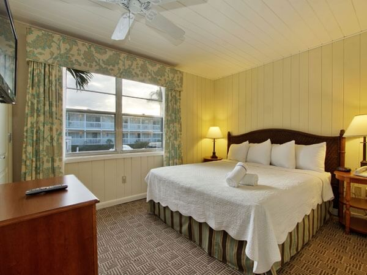

The Seaside Inn has with beautiful views of the Gulf of Mexico. Updated to honor the 1960's cottage character, enjoy gracious, nostalgic style services at Seaside Inn. Their suites and cottages all have full kitchens, guestrooms feature small appliances for your convenience.
Partial Gulf View – Available on 1st Floor or Top Floor
Our 320 square-foot partial view guest rooms take in views of the surrounding gardens and pool with a beautiful view of the Gulf of Mexico from a common porch area. For in-room convenience, these spacious rooms also provide a dining table and an array of thoughtful amenities.
Rates:
First Floor: $143.20 + taxes and fees per night.
Top Floor: $159.20 + taxes and fees per night.
• Two comfortable Queen Beds
• Common porch with seating areas
• Wireless Internet access
• Microwave, small refrigerator and coffee maker
• Spacious bathrooms with granite countertops
• 42" flat screen LCD TV with complimentary HBO
• DVD player available upon request
• Iron / ironing board
• Non-smoking guest rooms
• ADA accommodations available
Gulf View Guest Room – Available on 1st Floor or Top Floor
Our 320 square-foot gulf view guest rooms offer a beautiful view of the Gulf of Mexico from private screened balconies with walk outs leading directly to the beach for world-famous shelling. For in-room convenience, these spacious rooms also provide a dining table and an array of thoughtful amenities.
Rates:
$175.20 + taxes and fees per night.
• Two Queen Beds
• Stunning views of the Gulf of Mexico
• Porch
• Wireless Internet access
• Microwave, small refrigerator and coffee maker
• Spacious bathrooms with granite countertops
• 42" flat screen LCD TV with complimentary HBO
• DVD player available upon request
• Iron / ironing board
• Non-smoking guest rooms
• ADA accommodations available
Gulf Front Guest Room – Available on 1st Floor or Top Floor
Take in sweeping, direct views of the Gulf of Mexico and its shell-dotted beaches from a private, screened balcony on the top floor. Your 320 square-foot guest room includes a microwave, small refrigerator, coffee maker and an array of thoughtful amenities.
Rates:
First Floor: $191.20 + taxes and fees per night.
Top Floor: $207.20 + taxes and fees per night.
• Two Queen Beds
• Stunning views of the Gulf of Mexico
• Private screened balcony
• Wireless Internet access
• Microwave, small refrigerator and coffee maker
• Spacious bathroom with granite countertop
• 42" LCD TV, with complimentary HBO
• DVD player available upon request
• Iron / ironing board
• Non-smoking guest rooms
• ADA accommodations available
1-Bedroom Gulf View Suite
Perfect for families, our 1-Bedroom Suite provides spacious accommodations just steps from the pool and gulf. A private porch provides a view of the gardens and partial views of the Gulf of Mexico. A full-equipped kitchen completes the suite, with a microwave, coffee maker, dishes, flatware and cookware. This 420 square-foot suite accommodates up to four guests comfortably.
Rates:
$239.20 + taxes and fees per night.
• Queen-sized bed in a separate bedroom
• Fully-equipped kitchen
• Open-air porch with seating area
• Spacious bathroom with granite counter tops
• Daily complimentary continental breakfast
• Complimentary bottle of wine upon arrival
• Living room with Queen-sized sofa sleeper
• Open Den with trundle bed
• 42" flat screen LCD TV, with HBO and the Disney Channel
• DVD player available upon request
• Iron / ironing board
• Wireless internet access
• Daily newspaper
• Non-smoking
1-Bedroom Gulf Front Suite
You'll fall in love with our relaxing gulf front suites with spacious accommodations directly on the Gulf of Mexico. A private screened porch provides you with unparalleled views of the gulf. A full-equipped kitchen completes the suite, with a microwave, coffee maker, dishes, flatware and cookware. This 420 square-foot suite accommodates up to four guests.
Rates:
$255.20 + taxes and fees per night.
• Queen-size bed in separate bedroom
• Fully-equipped kitchen
• Private screened balcony with seating area
• Spacious bathroom with granite counter tops
• Daily complimentary continental breakfast
• Complimentary bottle of wine upon arrival
• Living room with Queen-size sofa sleeper
• 42" flat screen LCD TV, with HBO and the Disney Channel
• DVD player available upon request
• Iron / ironing board
• Wireless internet access
• Daily newspaper
• Non-smoking
3-Bedroom Gulf View Suite
At 620 square-feet, our three-bedroom, one bath suite is the most spacious accommodation at Seaside Inn. A private, open-air balcony with a seating area provides a view of the gardens. Decorated in soft, natural tones, the suite features an abundance of homelike touches in an enchanting setting.
Rates:
$303.20 + taxes and fees per night.
• 1 Bedroom with Queen bed
• 1 Bedroom with King bed
• 1 Bedroom with two Twin beds
• Private open-air balcony with seating area
• Fully-equipped kitchen
• Spacious bathroom with granite counter tops
• Daily complimentary continental breakfast
• Complimentary bottle of wine upon arrival
• Living room with Queen-size sleeper sofa
• 42" flat screen LCD TV, with HBO and the Disney Channel
• DVD player available upon request
• Wireless internet access
• Daily newspaper
• Iron / ironing board
• Non-smoking guest rooms

1-Bedroom Gulf View Cottage
Enjoy beautiful views of the Gulf of Mexico off your private outdoor deck. All the comforts of home abound in 475 square-feet, with a dining area and full kitchen that includes a range, oven, microwave, full-sized refrigerator, coffee maker, and toaster. All our cottages are just steps from the warm waters of the Gulf of Mexico.
Rates:
$215.20 + taxes and fees per night.
• King-size bed in separate bedroom
• Exceptional views of the Gulf of Mexico
• Fully-equipped kitchen
• Spacious bathroom
• Living room with Queen-size sleeper sofa
• Wireless Internet access
• Private open-air outdoor deck
• 42" LCD TV, with complimentary HBO
• DVD player available upon request
• Iron / ironing board
• Non-smoking guest rooms